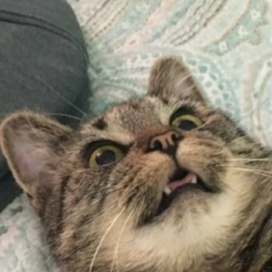

NUNO BALBONA PÉREZ
FULL-STACK DEVELOPER

Full-stack developer with +4 years of experience in UI/UX development, Backend development, and system administration in high-traffic apps.
EXPERIENCE
-
Developer at vonvon inc
2018 - 2020
- Developed multiple websites/apps related to Curious Cat, like Beacon
- Developed new features for Curious Cat, and kept an availability of 99.9%
-
Technical Cofounder at Curious Cat
2016 – 2018
- Curious cat is a Q&A social network used by more than one and a half million people every day, where you can ask and receive questions, sometimes anonymously.
- I cofounded Curious Cat in 2016, and we were acquired by Vonvon Inc two years after.
- Scaling was one of the main challenges, as we sometimes reached +40k concurrent users. It currently serves +2B requests per month.
-
Freelance Developer at Webmonster
2014 – 2017
- Freelance work for multiple multinationals and local companies
EDUCATION
I started programming at age 11, and taught myself how to code. I pursued a CS degree for a couple of years, but ultimately decided to drop out to focus on my projects.
I mainly deliver using common technologies (Vue, React, PHP, Node.js...) But I also love trying new things (Like Rust)
SKILLS
- Frontend: Vue, React, React Native, Redux, Webpack
- Backend: PHP, Node.js, MySQL, MongoDB, Linux, Redis, Memcached, AWS
- Personal skills: Native Spanish, Professional English, Remote work, Independent, Empathy, Work Ethic
PORTFOLIO
-
Curious Cat
- Brawlmance provides statistics for the videogame Brawlhalla
- It has mantained a small but steady user base for many years, mainly from recurring users and search engines
- It crawls millions of players every day, and keeps track of the global trends
-
Beacon
- Brawlmance provides statistics for the videogame Brawlhalla
- It has mantained a small but steady user base for many years, mainly from recurring users and search engines
- It crawls millions of players every day, and keeps track of the global trends
-
Brawlmance
- Brawlmance provides statistics for the videogame Brawlhalla
- It has mantained a small but steady user base for many years, mainly from recurring users and search engines
- It crawls millions of players every day, and keeps track of the global trends
- react-native-web-refresh-control: An implementation of React Native's RefreshControl for web, since react-native-web does not provide one at the moment
- Valentine Cards Bot: Anonymous valentine cards! Twitter Bot where you can send virtual valentine cards using a web interface. +30k cards sent
- Conway Engine: A moderately performant JS engine for Conway's Game of Life
- Node Image Hash: Perceptual image hash for node.js
- JS Launchpad: Library that uses the Web MIDI API to interact with the Launchpad Mk1